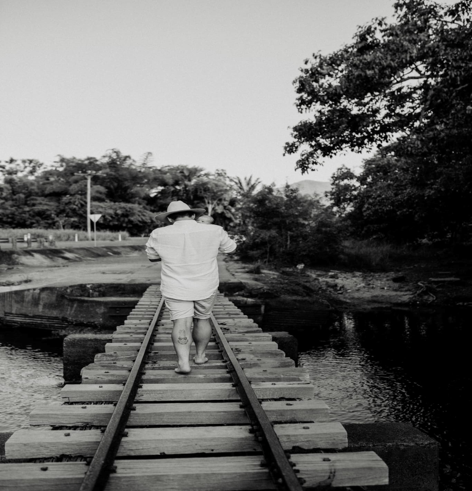

What you need to know about meüëãüèª
G'day my name is Laura, I am 28 and live in Far North Queensland, Australia and I have found a serious passion with the amazing, challenging and techinqical world of coding!
Over the last 12 years I have been given plenty of opportunities to work within many different industries in multiple different roles. However, unfortunately I have never been able to forfill the urge for something more within my career. In 2019, I married my bestfriend Sean and spent a year working and travelling all around queensland before coming back to Cairns. Shortly after, we were blessed with our first baby boy, Roman, born November 2021. During my time on materity leave, I still had this overwhelming emotion that while I loved the job I was in, I really didnt want to go back. While searching for alternative options I found a company advertising free 1hr session workshop for coding. Believe me when I say, I had no idea what was involved with coding or web development but decided to take the free class. After the class I felt excited and encouraged to step out of my comfort zone and try something I never thought I would ever be able to do. I signed up for the entire course and have spent the last year educating myself.
I completed my school years here in Cairns and started working within retail. After I graduated year 12, I had no idea what I wanted to do, so decided to futher my education within Business. I completed my business Cert 3 and got my first administrative role. I have since worked in many administrative roles such as receptionist, personal assistant, valuation coordinator, marketing, Social media coordinator, purchasing officer and even General Manager. While working within these roles I have always pushed myself to progress as far as I can go before feeling a certain unforfilment and then searching for the next opportunity to excel and educate myself. Since this had been a reoccuring pattern for me I relised it was time to search for something more!
Since falling in love with the world of coding and all the incredible options within this industry, from here I would like to look at applying for a few different roles and take any opportunity offered to me and then continue to grow my skills and education. A long term goal would be to become well educated and highly skilled within many roles and be able to support others on there journey too. I love to travel so the ability to work from all over the world excites me even more!
View Projects